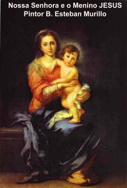
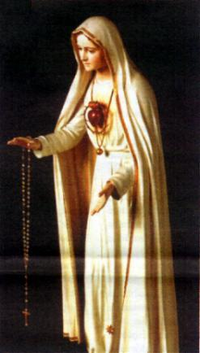
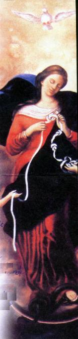

No dia 16 de Outubro, Sua Santidade o
Papa João Paulo II ao comemorar o 24º aniversário de Pontificado, proclamou
através da Carta Apóstolica Rosarium
Virginis Mariae o Ano do Rosário: de Outubro de
2002 a Outubro de 2003 e anexou os "
Mistérios Luminosos", as orações do Santo
Terço.
Irmã Lúcia, única sobrevivente das
Aparições de NOSSA SENHORA em Fátima, no livro "Apelos da Mensagem de Fátima",
dedica muitas páginas ao pedido da VIRGEM SANTÍSSIMA: "Rezem o Terço todos os dias"
. Esta recomendação, nossa MÃE SANTÍSSIMA a repetiu em todas
as Aparições, suplicando a humanidade que rezasse o Terço, que não se preocupasse
somente com o trabalho.
Este fato pode levar-nos a conjeturar: Qual terá
sido o motivo porque NOSSA SENHORA nos mandou rezar o Terço ou Rosário todos
os dias, com tanta insistência, e não nos mandou ir participar da Santa Missa todos
os dias"
Sem considerarmos o valor da Santa Missa, que é
incomensurável por ser a Oração mais completa, porque é o memorial da Vida, Paixão,
Morte e Gloriosa Ressurreição do SENHOR JESUS, a resposta é simples e compreensível:
NOSSA SENHORA nos convida a rezar o Terço ou Rosário diariamente, porque DEUS quer
e ELE é um PAI amoroso, repleto de misericórdia e bondade. Se por meio de NOSSA SENHORA
o SENHOR nos pedisse para participarmos todos os dias da Santa Missa, por certo haveria
muitos que iam apresentar motivos, para justificar a ausência, dizendo que para eles não seria
possível. Ao contrário, a oração do Terço é acessível a todos: a pobres, ricos, sábios, ignorantes,
homens, mulheres, jovens, grandes e pequenos, sem exceções. Todas as pessoas de boa vontade,
podem rezar o Terço ou Rosário na Igreja, diante do Santíssimo, ou no lar, em família ou sozinho,
no quarto, no trabalho, no transporte e até na rua. O horário também não importa. Ele pode ser
rezado pela manhã, a tarde ou a noite. Por isso mesmo, todos, estão convidados a reza-lo, inclusive
aquelas pessoas que tem a possibilidade de frequentar a Santa Missa diariamente; elas também,
não devem descuidar da reza do Terço ou Rosário. Bem entendido, em outro horário apropriado ao
longo do dia. Evidentemente não rezar o Terço exatamente no momento em que está participando
de uma Santa Missa.
A meditação dos Mistérios do Rosário nos
transporta para junto de DEUS e de nossa MÃE SANTÍSSIMA, revestindo o
espírito das pessoas de uma profunda confiança e muita tranquilidade, revigorando
a disposição e estimulando a vontade, além de proporcionar uma agradável
alegria interior.
Aos que dizem que o Terço é uma prece
antiquada e monótona, devido à repetição das orações que o compõe, seria bom
que estas pessoas recordassem que na vida tudo acontece numa continua repetição
dos mesmos atos. DEUS quis assim! Para vivermos, aspiramos e expiramos o ar dos
pulmões sempre do mesmo modo; o coração bate continuamente no mesmo ritmo;
o sol, as estrelas e todos os astros, seguem rigorosamente a sua trajetória durante
os séculos; o dia sucede à noite, ano após ano, do mesmo modo; as plantas brotam
na primavera, cobrem-se de flores, dão frutos; enfim, tudo na vida obedece a um ritmo,
funcionando em perfeita sintonia com a Vontade de DEUS! Entretanto, nunca ninguém
disse que isso é monótono! E realmente não pode dizer, porque tudo isso é parte da
maravilhosa Obra Divina. Pois bem, na vida espiritual também é assim, temos a necessidade
de repetir continuamente as mesmas orações, os mesmos atos de fé, de esperança e caridade,
para nos sentirmos ligados a DEUS e termos vida em plenitude, visto que a nossa vida
é uma continuada participação na Vida de DEUS. Rezar e pedir sempre não significa
imaginar que desconfiamos da bondade Divina, que estamos recordando ao SENHOR para
que ELE não se esqueça de nosso pedido. Não! Não é assim! Ao contrário, repetir a oração
é gesto de humildade, e de muita confiança. É ter a certeza de que DEUS é tão bom, que
apesar de nossos muitos pecados, ELE aceita aquele insignificante sacrifício de repetir
orações, como se fosse uma grandiosa e eloquente demonstração de nosso amor. Assim,
os que rezam diariamente o Terço, são como filhos carinhosos que todos os dias dispõe
de alguns minutos de seu tempo para visitar o PAI ETERNO, para LHE fazer companhia,
manifestar-LHE gratidão por tudo o que ELE nos proporciona. E também é o momento
para nos colocarmos a disposição DELE, recebermos os conselhos Paternos e a orientação
necessária a nossa existência.
Alguém poderia dizer: isto é fantasia, como isto é possível se não vemos DEUS? Não vemos
o CRIADOR com os olhos da carne, mas sempre podemos ouvi-LO e enxerga-LO com os
ouvidos e os olhos da alma. É preciso crer e ter fé. Quanto maior for a sua fé e sua confiança
em DEUS, mais nítida e melodiosa ouvirá em seu coração os acordes da Voz do SENHOR.
Assim, no momento das orações, devemos permanecer humildes e unidos ao SENHOR.
E por isso, devemos pedir também a benção Divina, porque ela guardará a nossa vida e encherá
o nosso espírito com graças e virtudes, a fim de destemidamente continuarmos com a missão
que ELE mesmo nos confiou. Estas providências são necessárias, porque naqueles minutos
maravilhosos de oração, acontece o precioso e inefável intercâmbio de amor, que une a criatura
ao CRIADOR, promovendo a união do filho ao PAI ETERNO e do PAI ETERNO a todos os
seus filhos numa sobrenatural corrente de esperança e fé. E o SENHOR sempre
repleto de bondade, naquele momento especial derrama torrencialmente o seu infinito Amor
no interior do coração daqueles que buscam a sua tão carinhosa e paternal proteção.
BENEFÍCIOS
A Reza do Terço ou Rosário, é uma prática que só
apresenta vantagens, muito embora seja constituído por um conjunto de orações simples,
repetidas quase que mecanicamente. Na verdade ele tem na sua simplicidade uma força
extraordinária, demonstrada de modo impressionante no decorrer dos séculos, afugentando
Satan's de modo direto e admirável.
Aconteceram muitos fatos que atestam o valor do Terço
e do Rosário, como auxiliar preponderante para vencer as forças do mal, além de revelar
como sendo um instrumento eficaz para alcançar do SENHOR, os objetivos na vida, uma
vigorosa proteção contra as catástrofes e auxílio precioso na solução das dificuldades
e dos problemas que acontecem. Por outro lado, são muitas as indulgências concedidas
pela Igreja à todas as pessoas que recitam o Terço no cotidiano:
1) É concedido Cinco anos de
indulgência a cada recitação particular do Rosário ou Dez anos, se for feita por um grupo
de pessoas.
2) É concedida Indulgência Plenária,
no último domingo de cada mês, para aqueles que anteriormente, em grupo, tiverem recitado
o Rosário três vezes, em qualquer das semanas precedentes, e também, que se Confessarem
ou estiverem em "estado de graça"
, receberem a Sagrada Eucaristia e fizerem visita a uma Igreja
ou Oratório do Santo Padre, rezando um PAI NOSSO, uma AVE MARIA e um GLÓRIA,
pelas intenções do Papa, no dia mencionado.
3) Durante o mês de Outubro, uma
indulgência de sete anos é concedida, a cada dia, pela recitação de um Terço.
4) Confessando ou estando em
"estado de graça", comungando e visitando uma Igreja ou Oratório Público, rezando pelo Papa as orações
recomendadas acima, receberão uma indulgência plenária, se o Terço for rezado na Festa do
Rosário (dia 7 de Outubro),
ou se for rezado durante a oitava da Festa, ou seja, (numa data,
até o oitavo dia após a Festa).
5) Diante do Santíssimo Sacramento
exposto publicamente, ou mesmo encerrado no Sacrário dentro de uma Igreja, as pessoas
que recitarem piedosamente o Terço, é concedido uma Indulgência Plenária, a cada vez que
o fizerem.
Dessa forma torna-se evidente, que a devoção ao Santo
Terço ou Santo Rosário, é uma providência louvável e de valor inquestionável, que somente
beneficia o fiel.
ORIGEM DO ROSÁRIO
Ao longo das gerações, em muitos povos, sempre
existiram pessoas que se

preocuparam em cultivar a sua religiosidade de uma maneira
mais intensa e carinhosa, com o objetivo de agradar o SENHOR. E para ter um controle sobre
a quantidade de orações, a medida que iam rezando, adotaram marca-las utilizando algum
artifício: como contagem nos dedos, usando pequenos ossos, gravetos de madeira ou pequenos
seixos rolados (pedrinhas redondas), para terem um controle certo sobre a seqüência de suas
preces. Esta prática é confirmada pelo história, porque era um costume utilizado com frequência
por muitos cristãos, pelos monges e eremitas do deserto, logo após o alvorecer do cristianismo.
No Ocidente esse hábito também foi cultivado pelas pessoas piedosas e adquiriu um forte
incremento no final do século X, quando os fiéis rezavam o Pai-nosso diversas vezes seguidas,
num gesto de súplica de perdão pelas faltas cometidas, da mesma forma que rezavam como gesto
de humildade, declarando perdoar as pessoas que cometeram faltas contra eles. Com a
finalidade de favorecer tais exercícios de piedade, foram confeccionadas correntes de uso
manual, que facilitavam a contagem das preces. Essas correntes ou cordões possuíam aneis
que eram divididos de dez em dez, sendo o último sempre mais grosso para facilitar a contagem.
Estes cordões ou correntes eram chamados de
"Paternoster". Junto com esta devoção, cresceu o culto
a NOSSA SENHORA. Desde a realização do Concílio de Êfeso, era comum os cristãos
construírem jaculatórias baseadas em acontecimentos evangélicos, para saudar a VIRGEM
MÃE. No Concílio de Êfeso no ano 431, foram reconhecidas as prerrogativas especiais de
MARIA, dadas pelo CRIADOR, e foi decretado o Dogma da Maternidade Divina da MÃE
DE DEUS. No dia de encerramento do Concílio, depois de palavras admiráveis dos Padres
Conciliares, que ressaltaram as virtudes e as prerrogativas especiais da VIRGEM MARIA,
Sua Santidade o Papa Celestino I emocionado e com lágrimas nos olhos, ajoelhou-se perante
a assembléia e respeitosamente saudou NOSSA SENHORA: "SANTA MARIA, MÃE de DEUS, rogai por nós pecadores, agora e na
hora de nossa morte. Amém." Na continuidade dos anos,
esta saudação foi unida àquela que o Arcanjo Gabriel fez a MARIA, conforme o Evangelho
de JESUS escrito por São Lucas (1,26-38) "Ave
cheia de graça, o SENHOR está contigo!" e também, foi
unida a uma outra saudação que Isabel fez a MARIA, quando Ela foi a Ain Karin na casa de
sua prima para ajuda-la nos três últimos meses de gravidez. Sua prima Isabel estava idosa
e necessitava de companhia. Disse Isabel ao saudar MARIA: "Bendita és tu entre as mulheres, e bendito é o fruto do teu ventre."
(Lucas1, 42) Estas três saudações deram origem a Oração da
AVE MARIA.
Todavia, a primeira manifestação efetiva utilizando
o Terço ou Rosário, ocorreu no século XIII. No ano 1204, o Padre Domingos de Gusmão,
fundador da Ordem dos Padres Pregadores, conhecidos por Padres Dominicanos, estava
preocupado com os poucos frutos que seus zelosos missionários conseguiam, apesar das
exaustivas e perseverantes pregações. A heresia dos albigenses infestava o sul da França
e se difundia em todas as regiões com grande publicidade, negando a Encarnação de JESUS
e o dom Divino concedido as pessoas, de gerar e criar cristãmente os seus
filhos. NOSSA SENHORA sempre bondosa e complacente, apareceu a Padre Domingos e
lhe ensinou a rezar o Rosário, como arma eficaz para combater a heresia e

converter o coração das pessoas. Padre Domingos e seus
missionários acolheram a orientação Divina e rezaram diariamente o Rosário de
NOSSA SENHORA com muito fervor e assim, conseguiram resultados admiráveis na
luta contra os hereges e na conversão de milhares de pessoas, que acolheram os
ensinamentos da Igreja.
Num passo seguinte o monge cartuxo Henrique de Egher
ou de Calcar, em 1408, redigiu um poema intitulado
"Psalterium Beatae Mariae", no qual estimulava a recitação
de um Pai-Nosso antes de cada dezena , ou seja, antes da reza de dez AVE MARIA,
divulgando o Terço como NOSSA SENHORA apresentou.
Por volta de 1570, no século XVI, os otomanos estavam
com um poderio militar notável. Apoderaram-se do Santo Sepulcro em Jerusalém e
não permitiam a visita dos cristãos. O Papa Pio V, aborrecido e preocupado com o acontecimento,
organizou uma Cruzada, cujo comando entregou a Dom João da Áustria, que era irmão de Carlos V,
Rei da Espanha e Imperador do Sacro Império Romano. Foi quando aconteceu a famosa Batalha
Naval no Golfo de Lepanto, em 7 de Outubro de 1571, em que a armada turca com um forte poderio
naval que ultrapassava o dobro dos navios dos Cruzados, incidiu ferozmente para destruir os cristãos.
Os Chefes Cruzados percebendo o perigo iminente, de joelhos suplicaram a intercessão de NOSSA
SENHORA. Pela Vontade de DEUS foram inspirados a rezar o Terço como única forma de
poderem enfrentar aquele terrível inimigo. Assim fizeram. Permaneceram de joelhos e rezaram.
Milagrosamente a medida que se desencadeava a batalha os cristãos foram vencendo de modo
surpreendente e subjugaram os hereges. Em homenagem, o Papa Pio V instituiu a Festa de NOSSA
SENHORA DAS VITÓRIAS. Todavia, dois anos mais tarde, o Papa Gregório XIII, seu sucessor,
lembrando que a vitória de Lepanto foi mais uma vitória do Rosário, mudou o nome da Festa
colocando: Festa de NOSSA SENHORA DO ROSÁRIO.
Atualmente com a inclusão dos Mistérios
Luminosos, o Santo Rosário é apresentado com quatro Conjuntos de Mistérios:
Mistérios Gozosos, Mistérios Dolorosos, Mistérios Gloriosos e Mistérios
Luminosos, ou seja, o Rosário é constituído por

quatro Terços. Cada Conjunto de Mistérios corresponde a um
Terço. Assim sendo, o Terço atualmente corresponde a quarta parte do Rosário.
Cada Terço é constituído por 50 AVE-MARIA intercaladas por 5 PAI-NOSSO e as
orações rezadas no início e no fim do Terço.
A devoção ao Terço e Rosário sempre
foi favorecida pelos Pontífices Romanos, merecendo relevo especial a
atuação do Papa Leão XIII, que determinou a todas as paróquias do mundo,
fosse o mês de outubro especialmente dedicado a recitação do Rosário.
Sua Santidade realçando as qualidades do Rosário, acrescentou: "... não é uma oração meramente vocal,
mas uma repetição de preces que cria um clima de contemplação, que permite
a meditação dos grandes mistérios da nossa fé, a medida que rezamos cada
dezena do Rosário."
IMPORTÂNCIA DO ROSÁRIO
A Igreja pela voz de seus Pastores, atribui
os seus maiores triunfos à piedosa recitação do Rosário de NOSSA SENHORA. E por isso
mesmo, a gratidão da cristandade é expressada pela boca dos Sumos Pontífices: o Papa
Urbano IV disse: "Pelo Rosário, todos os
dias desce dos Céus uma chuva de bênçãos sobre o povo cristão";
o Papa Sixto IV falou: "O Rosário é a oração
oportuna para honrar a DEUS e a VIRGEM MARIA, assim como afastar para bem longe os
iminentes perigos do mundo." O Papa Pio V disse: "Propagando-se esta devoção entre os cristãos, irá
propicia-los à meditação dos mistérios inflamados por esta oração, e assim, começarão
a transformar-se em outros homens, enquanto as trevas das heresias dissipar-se-ão e
difundir-se-á a luz da fé católica". O Papa Leão XIII falou:
"... de modo que, ao recitarmos bem o
Rosário, sentimos em nossa alma uma unção suavíssima, como se ouvíssemos a própria
voz da MÃE celestial, que amavelmente nos ensina os Divinos Mistérios e nos indica o
caminho da salvação". O Papa João Paulo II falou: "Com o Rosário, o povo cristão frequenta a escola de MARIA,
para deixar-se introduzir na contemplação da beleza do rosto de CRISTO e na experiência da
profundidade do seu amor." O Papa João Paulo II ainda falou:
"O Rosário é o compêndio da Bíblia. Nele meditamos,
em cada mistério, todas as passagens bíblicas: os Mistérios da Alegria
(ou Gozosos - da Anunciação do Anjo até o encontro do Menino JESUS no Templo); Mistérios da Luz (ou Luminosos - do Batismo
de JESUS até a Instituição da Eucaristia); Mistérios da
Dor (ou Dolorosos - da Agonia de JESUS no horto até a sua Crucificação)
e os Mistérios da Glória (ou Gloriosos - da
Ressurreição de JESUS até à coroação de NOSSA SENHORA no Céu)".
"UMA
GRANDE ALEGRIA"
ENCERRANDO ESTAS
INFORMAÇÕES SOBRE O TERÇO DE NOSSA SENHORA, GOSTARIA DE OUVIR A
MÚSICA "O TERÇO", COM ROBERTO CARLOS? Então clique
nas notas musicais abaixo:
 por um conjunto de orações simples,
repetidas quase que mecanicamente. Na verdade ele tem na sua simplicidade uma força
extraordinária, demonstrada de modo impressionante no decorrer dos séculos, afugentando
Satan's de modo direto e admirável.
por um conjunto de orações simples,
repetidas quase que mecanicamente. Na verdade ele tem na sua simplicidade uma força
extraordinária, demonstrada de modo impressionante no decorrer dos séculos, afugentando
Satan's de modo direto e admirável.